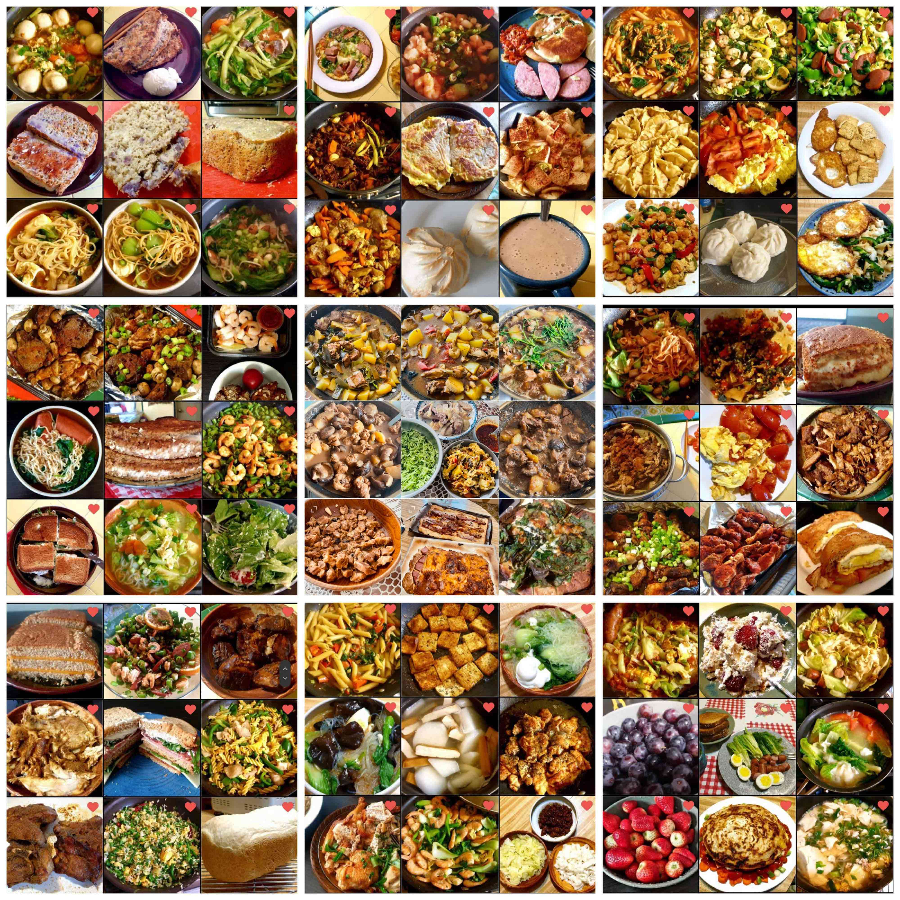
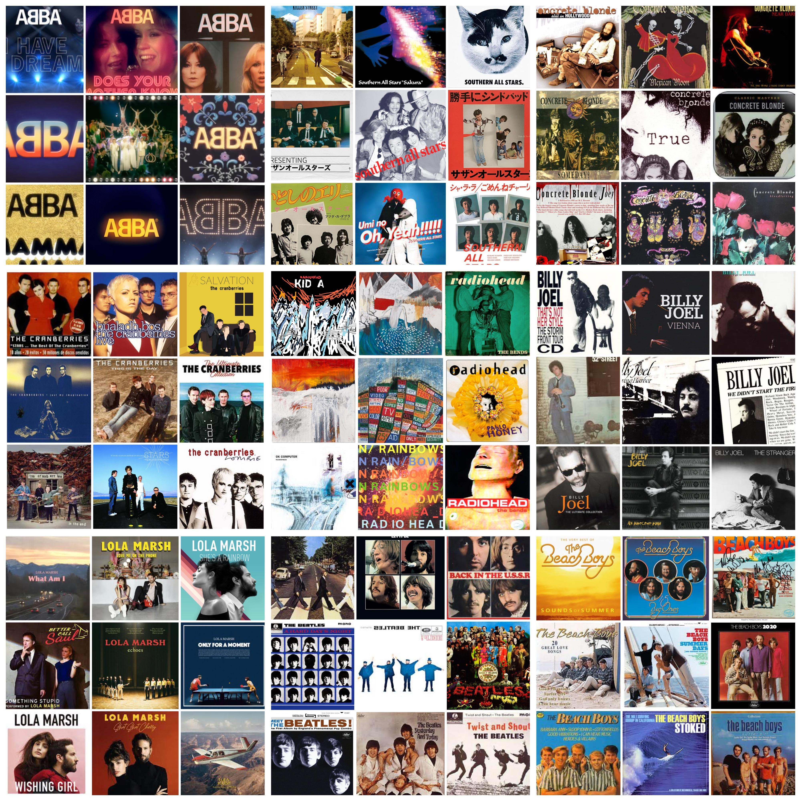
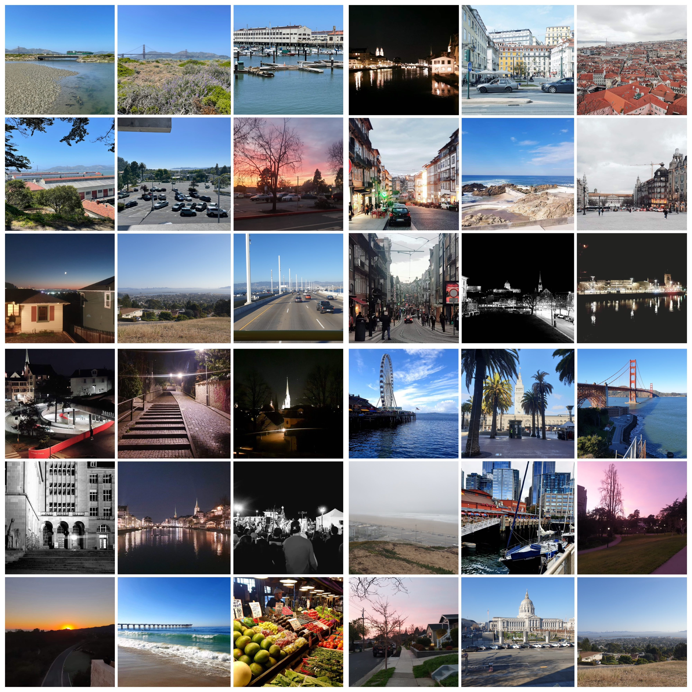

I have a deep affection for various cuisines, spanning from exquisite fried cuisine to delightful baked goods.
One of the most captivating aspects of life for me is the ability to savor foods from diverse cultures,
promoting both culinary exploration and our well-being.
I've got a real soft spot for animals.
They're like these awesome buddies who hang out with us humans. They're not just great for keeping us company,
but also pretty beneficial for our mental health.
We are lucky to have these fantastic companions that bring positivity to our lives.


Rock music is totally my jam. It can help me be motivated when I'm at work.
They kind of give me this boost of energy and inspiration that helps me power
through tasks and get stuff done. It's like having a secret weapon in my playlist for both relaxation and productivity!
I absolutely love going on long-distance walks and capturing
moments with my camera during my stops. This leisurely yet incredibly fulfilling physical
activity isn't just great for my heart, but it also gives me the chance to closely observe the intricacies of our cities.
